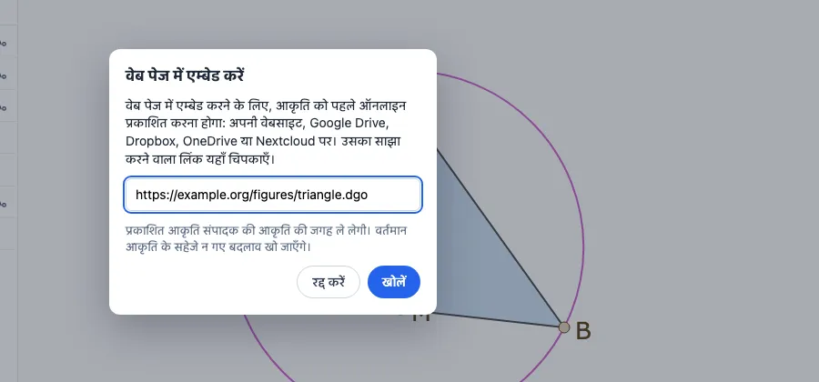
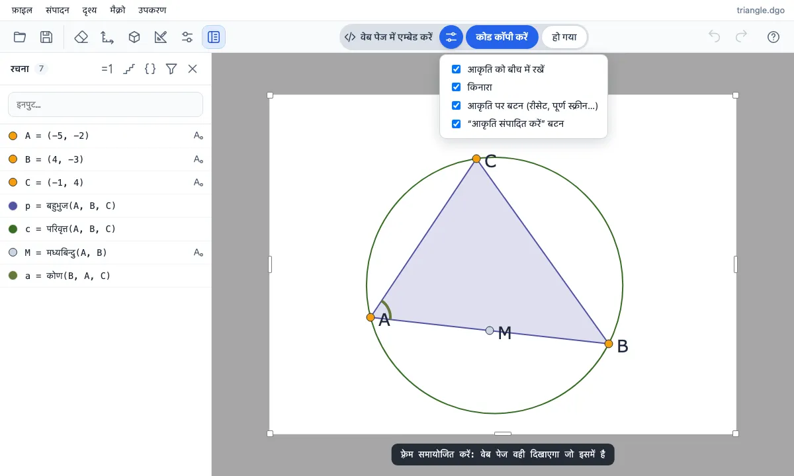

वेब पेज में एम्बेड करना
DocGeo की आकृति किसी भी वेब पेज में दिखाई जा सकती है — आपकी वेबसाइट, Moodle का कोई कोर्स, कोई ब्लॉग — और वहाँ उसे DocGeo की तरह ही चलाया जा सकता है। बस पेज के HTML में वह कोड चिपकाना है जो संपादक तैयार करता है। आकृति पेज की चौड़ाई के अनुसार ढल जाती है, फ़ोन पर भी।
सिद्धांत
पेज में आकृति नहीं होती: हर बार दिखाए जाने पर वह आकृति को वहीं से पढ़ता है जहाँ आपने उसे ऑनलाइन प्रकाशित किया है। इसलिए:
- आकृति को पहले ऑनलाइन रखना होगा, जैसे उसे लिंक से साझा करने के लिए;
- पेज को अपडेट करने के लिए प्रकाशित फ़ाइल को बदलना ही काफ़ी है: उसे एम्बेड करने वाले सभी पेज तुरंत नया संस्करण दिखाते हैं, उनके कोड को छुए बिना।
चरण दर चरण
-
आकृति सहेजें (Ctrl S), फिर
.dgoफ़ाइल को ऑनलाइन रखें: अपनी वेबसाइट, Google Drive, Dropbox, OneDrive या Nextcloud पर। उसका साझा करने वाला लिंक कॉपी करें। -
फ़ाइल › वेब पेज में एम्बेड करें… चुनें। यदि
आकृति उसके लिंक से नहीं खोली गई थी, तो DocGeo लिंक माँगता
है: उसे चिपकाएँ और खोलें पर क्लिक करें। तब
प्रकाशित आकृति संपादक की आकृति की जगह ले लेती है, जिससे यह
पक्का होता है कि कोड काम करेगा।

- आकृति पर एक फ़्रेम दिखाई देता है: पेज ठीक वही दिखाएगा जो इसमें है। उसके हैंडल (कोने और भुजाओं के मध्य) उसका आकार बदलते हैं, उसके किनारे और उसका लेबल उसे खिसकाते हैं। फ़्रेम सेट करने के लिए आप ज़ूम भी कर सकते हैं, दृश्य खिसका सकते हैं या 3D आकृति घुमा सकते हैं; आकृति को अब भी चलाया जा सकता है।
-
ज़रूरत हो तो कोड कॉपी करें के बाईं ओर वाले
बटन से विकल्प सेट करें।

- कोड कॉपी करें पर क्लिक करें, फिर यह कोड अपने पेज के HTML में चिपकाएँ।
- हो गया या Esc फ़्रेम हटा देता है।
विकल्प
| विकल्प | प्रभाव |
|---|---|
| आकृति को बीच में रखें |
कोड को <center> में रखता है:
आकृति पेज के बीच में रहती है।
|
| किनारा | आकृति के चारों ओर एक पतली स्लेटी रेखा। |
| आकृति पर बटन | आकृति के ऊपर दाईं ओर एक छोटी पट्टी, जो माउस ऊपर आने पर दिखती है: आकृति रीसेट करना, उसे पूर्ण स्क्रीन में दिखाना। |
| “आकृति संपादित करें” बटन | इस पट्टी में एक बटन जोड़ता है जो आकृति को संपादक में, नए टैब में खोलता है। उदाहरण के लिए, इसे हटाएँ ताकि विद्यार्थी रचना न देख सकें। |
शुरुआत में सभी विकल्प चुने रहते हैं; संपादक बंद होने तक आपके चुनाव बने रहते हैं।
चिपकाने वाला कोड
कॉपी किया गया कोड कुछ ऐसा दिखता है:
<center><iframe
src="https://…/index.html?fit=704,512,…&url=https://…/triangle.dgo"
style="width:704px;max-width:100%;aspect-ratio:704/512;border:1px solid #ccc"
allow="fullscreen" loading="lazy"></iframe></center>
पेज में आकृति का आकार बदलने के लिए केवल
width बदलें, पिक्सेल में: ऊँचाई अपने आप साथ चलती
है, और आकृति फ़्रेम के अनुपात बनाए रखती है। फ़ोन जैसी संकरी
स्क्रीन पर वह अपने आप छोटी हो जाती है
(max-width:100%)। aspect-ratio केवल तब
बदलें जब आकृति की जगह को कोई और आकार देना हो; आकृति उसमें पूरी
और बीच में रहती है। fit= के बाद आने वाली संख्याएँ
बताती हैं कि आकृति क्या दिखाती है, उसका आकार नहीं: उन्हें न
बदलें।
कोड वहाँ चिपकाएँ जहाँ पेज HTML स्वीकार करता है: सीधे
.html फ़ाइल में, WordPress के “Custom HTML” ब्लॉक
में, या Moodle के टेक्स्ट संपादक के HTML (सोर्स कोड) मोड में।
पेज के भीतर
वहाँ आकृति DocGeo की तरह ही चलती है: बिंदु, स्लाइडर, चेकबॉक्स, बटन… खाली जगह पर खींचने से दृश्य खिसकता है, या 3D में घूमता है। माउस व्हील पेज को स्क्रॉल करता है, हर जगह की तरह; आकृति पर ज़ूम करने के लिए Ctrl + व्हील का उपयोग करें, या टचपैड पर दो उँगलियों से पिंच करें।
आकृति बड़ी करने के लिए दो उँगलियाँ फैलाएँ और छोटी करने के लिए पास लाएँ। दृश्य खिसकाने के लिए दोनों उँगलियाँ साथ खिसकाएँ।
ऊपर दाईं ओर के बटन आकृति को रीसेट करते हैं (जैसी पेज ने उसे खोला था), उसे पूर्ण स्क्रीन में दिखाते हैं और, यदि विकल्प चुना हो, तो उसे संपादक में खोलते हैं।
स्प्रेडशीट दृश्य वाली आकृति अपनी शीट बिना मेनू और बटनों के दिखाती है: उसके सेलों में लिखा जा सकता है, और आकृति साथ चलती है। रीसेट करने से मूल सेल लौट आते हैं (छात्रों के लिए)।

एम्बेड की गई आकृति को अपडेट करना
आकृति को उसके लिंक से संपादक में खोलें (उदाहरण के लिए पेज के “आकृति संपादित करें” बटन से), उसे बदलें और सहेजें, फिर प्रकाशित फ़ाइल को उसी जगह, उसी लिंक के साथ बदलें: Google Drive पर फ़ाइल का नया संस्करण अपलोड करके; Dropbox, OneDrive या Nextcloud पर नई फ़ाइल को उसी नाम से उसी फ़ोल्डर में रखकर। तब आकृति को एम्बेड करने वाले सभी पेज, अपना कोड बदले बिना, नया संस्करण दिखाते हैं।
केवल फ़्रेम बदलने के लिए फिर से फ़ाइल › वेब पेज में एम्बेड करें… चुनें और नया कोड कॉपी करें: प्रकाशित फ़ाइल बदलने की ज़रूरत नहीं।
यदि आकृति लिंक से खोले जाने के बाद संपादक में बदली गई है, तो DocGeo फ़्रेम दिखाने से पहले यह याद दिलाता है: जब तक प्रकाशित फ़ाइल नहीं बदली जाती, पेज पुराना संस्करण दिखाता है।
यदि आकृति दिखाई न दे
- लिंक सार्वजनिक होना चाहिए: Google Drive पर “लिंक वाला कोई भी व्यक्ति” पहुँच, Nextcloud पर बिना पासवर्ड का लिंक।
-
कुछ प्लेटफ़ॉर्म चिपकाए गए HTML से
<iframe>हटा देते हैं, या उन्हें केवल कुछ साइटों या कुछ उपयोगकर्ताओं के लिए स्वीकार करते हैं: अपने प्लेटफ़ॉर्म की सेटिंग जाँचें। -
आपके कंप्यूटर पर इंस्टॉल किए गए DocGeo (पता
localhost) से कॉपी किया गया कोड केवल उसी पर काम करता है: कोड ऑनलाइन संपादक से कॉपी करें। -
पूर्ण स्क्रीन बटन तभी दिखता है जब
<iframe>मेंallow="fullscreen"गुण हो, जो कॉपी किए गए कोड में होता है।